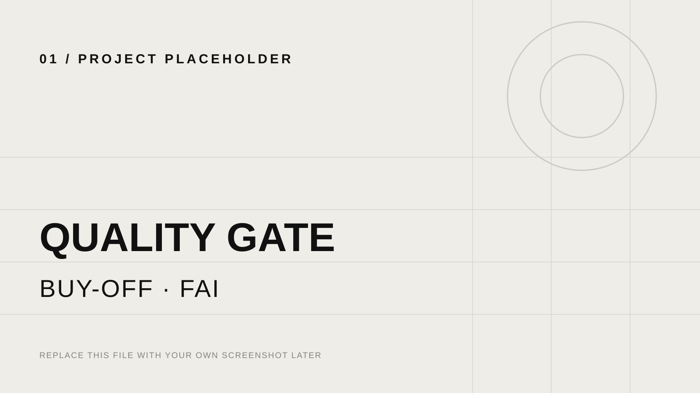
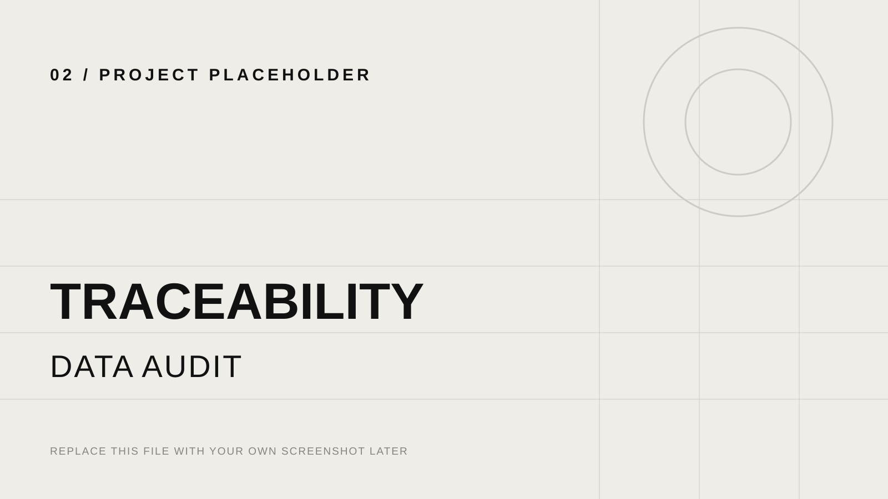
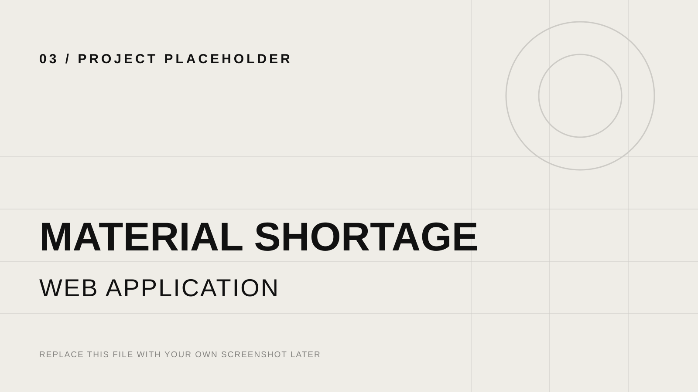
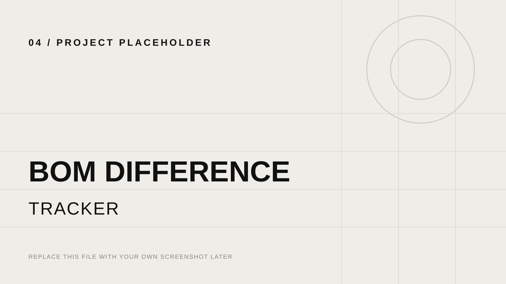
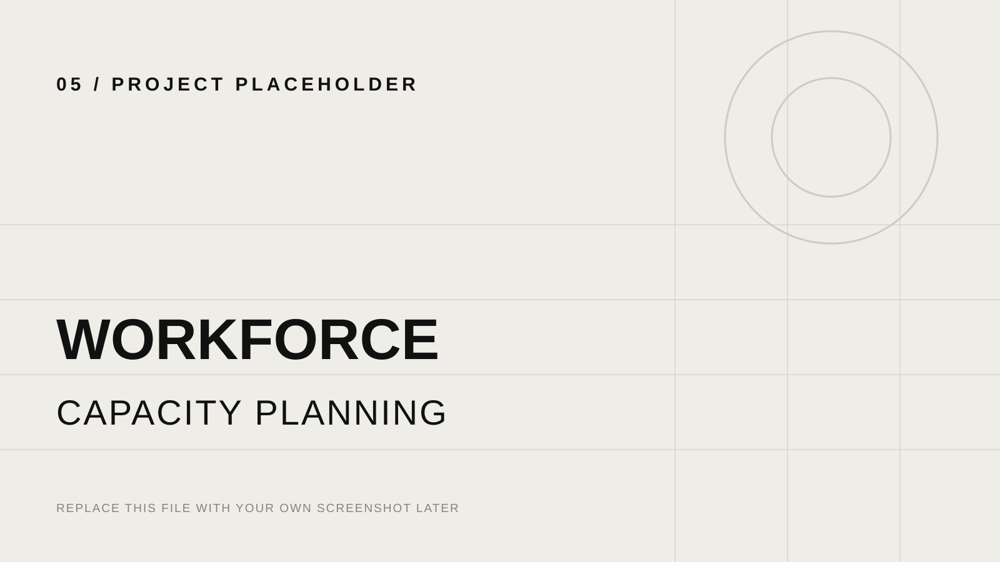
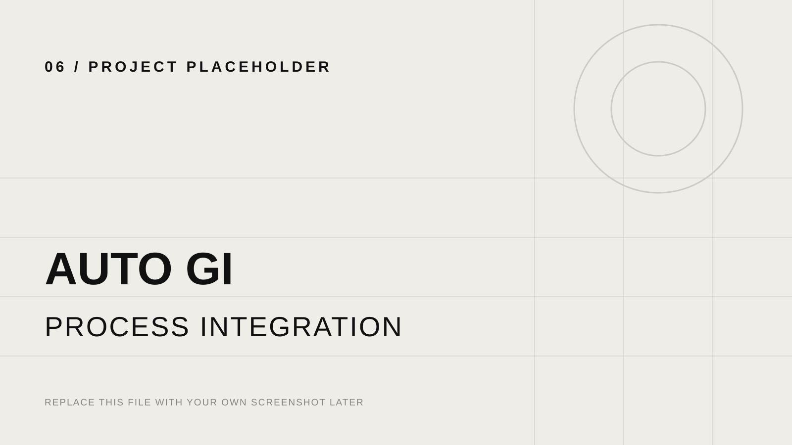
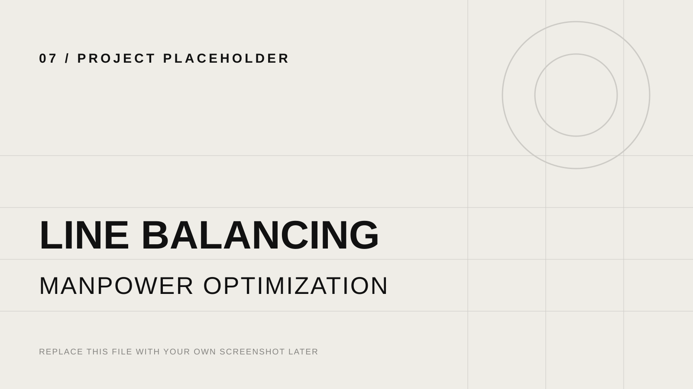
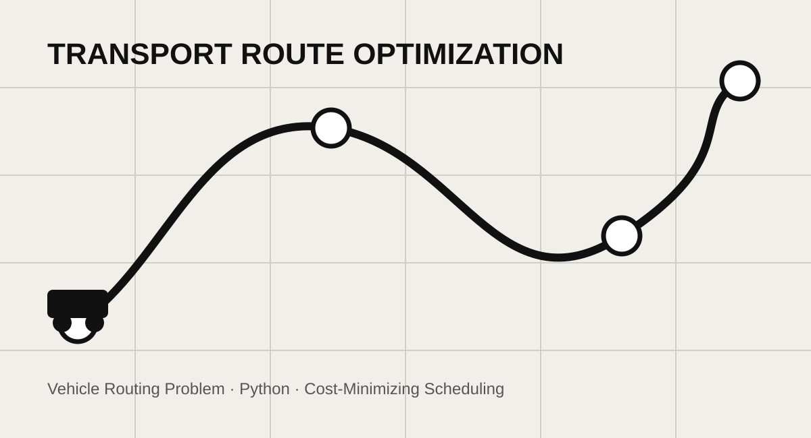

Production Quality Gate, Buy-off & FAI Control
A connected workflow for Production and IPQC to control Buy-off, FAI, BOM validation, approvals, exceptions, and pending-job follow-up.
View case study ↗Nguyen Viet Bao · Ho Chi Minh City
Production Leader focused on turning shop-floor requirements into clear workflows, digital applications, automation, reliable data models, and practical operational dashboards.
SQL · Python · Databricks · Power BI · Power Query
Power Apps · Power Automate · SharePoint · Office Scripts
Process Mapping · Traceability · ERP · Time Study · Line Balancing
I am a Logistics and Industrial Systems Engineering graduate with hands-on experience in manufacturing digitalization, process improvement, production data, and cross-functional project execution.
My work connects operational requirements with practical solutions across Production, IPQC, Warehouse, PMC, Automation, and IT — with a focus on visibility, control, quality compliance, and better decision-making.
Open any project to see the full STAR case study. Company-sensitive details remain high-level, and the current placeholder visuals can be replaced with real project screenshots later.

A connected workflow for Production and IPQC to control Buy-off, FAI, BOM validation, approvals, exceptions, and pending-job follow-up.
View case study ↗
A job- and serial-level audit model that reconciles EOL, OneKey, Openlink, ERP, GI, and production records.
View case study ↗
A fully web-based workflow for shortage requests, approval, stock validation, warehouse queues, reservation, ETA, and lead-time analysis.
View case study ↗
An automated control tool for comparing BOM versions, highlighting abnormal changes, validating mandatory data, and maintaining history.
View case study ↗
A planning model that connects production demand, required headcount, available manpower, hiring constraints, line capacity, and cross-zone transfer scenarios.
View case study ↗
A cross-functional process connecting packing traceability, carton and pallet aggregation, QC/Production checkpoints, ERP Goods Issue, and Warehouse readiness.
View case study ↗
Time studies, bottleneck analysis, work-element balancing, and manpower optimization across Grinder and D&F product families.
View case study ↗
A Python-based Vehicle Routing Problem model for tank-truck scheduling at Gas Shipping, designed to minimize transport cost and improve fleet utilization.
View case study ↗Coordinate manufacturing digitalization and process-improvement projects across Production, IPQC, Warehouse, PMC, Automation, and IT. Translate operational needs into workflows, business rules, applications, automation, data models, UAT, and deployment plans.
Supported manufacturing engineering, machine-parameter updates, OIS revision, supplier coordination, sample evaluation, technical issue investigation, and cross-functional improvement activities.
Managed import/export documentation, container declarations, shipment plans, customer coordination, and daily status tracking for port and vessel operations.
SQL, Python, Databricks, Power Query, ERP data, data validation, traceability models, and operational analysis.
Power Apps, Power Automate, SharePoint, Office Scripts, workflow design, approval logic, and role-based processes.
Process mapping, time study, line balancing, capacity planning, UAT, deployment, stakeholder coordination, and continuous improvement.